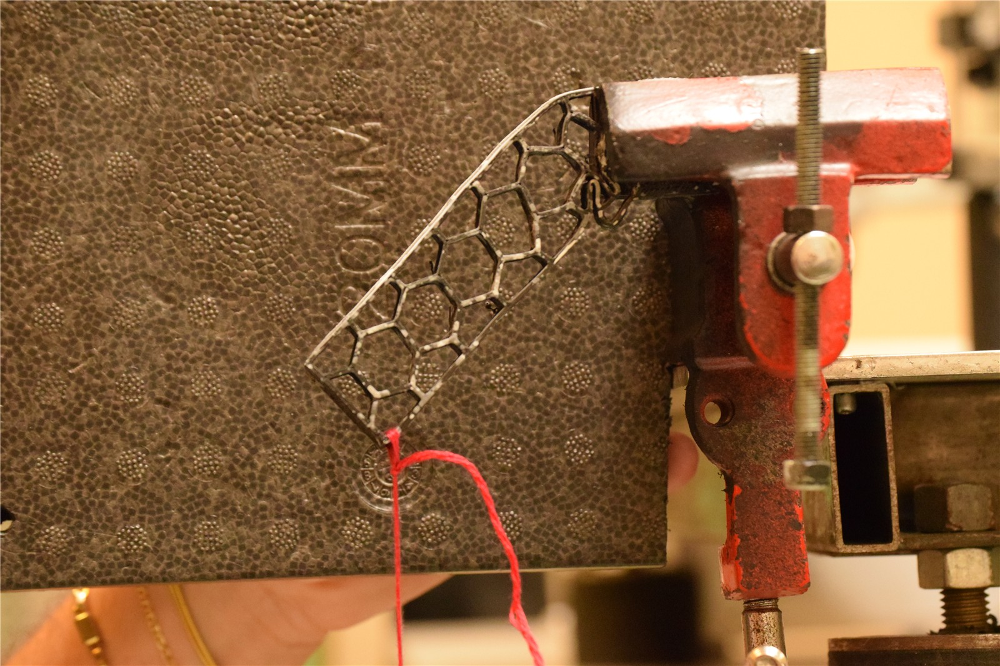

Il mio contributo
Ho partecipato al lavoro congiunto del gruppo, attraverso brainstorming e collaborazione nelle attività sperimentali, nell’elaborazione e nella discussione dei risultati. Le attività non sono state attribuite in esclusiva ai singoli componenti.
La sfida progettuale
Analizzare la risposta di un campione trabecolare in nylon stampato in 3D attraverso la correlazione di immagini e confrontarne il comportamento prima e dopo il danneggiamento.
Metodo e decisioni
Dall’immagine alla misura
Il gruppo ha preparato lo speckle, definito ROI e parametri di correlazione e calibrato la scala prima di elaborare le immagini in Ncorr.
Confrontare condizioni equivalenti
Il confronto con il provino integro utilizza lo step valido da 500 g. Il cambio di zoom e le dimensioni dello speckle sono limiti riconosciuti della campagna sperimentale.
- Preparazione dello speckle e acquisizione fotografica con carichi applicati tramite masse calibrate.
- Selezione della ROI, definizione di subset e seed, calibrazione della scala ed elaborazione dei campi con Ncorr in MATLAB.
- Confronto fra provino integro e danneggiato e valutazione dell'influenza di qualità ottica e parametri di correlazione.
Risultati
I campi di spostamento risultano coerenti con la previsione macroscopica. Il confronto evidenzia una maggiore flessione del provino danneggiato a parità di carico. Il lavoro mette in evidenza quanto il controllo dell'acquisizione sia importante per la qualità della misura.

Immagini tratte dagli elaborati del team. I contributi personali sono riportati sulla base delle attività confermate dall’autore.